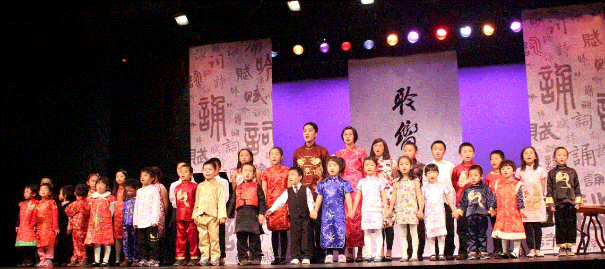
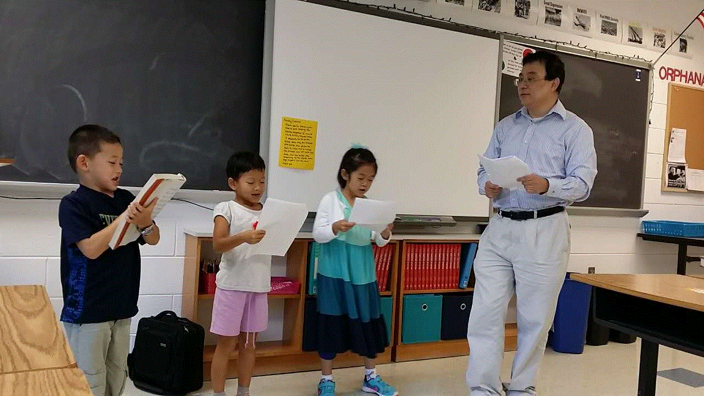

面向智能时代的教育顶层设计 |
——美中实验中文学校赫城校区系列讲座 |
| 2017-10-13 |
|
近年来人工智能技术取得了令人瞩目的进步，未来二三十年人工智能科技的迅猛发展将使人类面临有史以来最大的机遇和最严峻的挑战，我们必须对此有清醒的认识和充分的准备。 在人工智能时代，绝大多数有规律的重复性体力和脑力劳动都将被智能机器所取代。想过平凡的生活，做普通劳动者的大多数人们将无工可作，靠救济为生。人类将很可能被分成两种，一种人管理着强大的智能机器，另一种人被智能机器所管理。我们如何规划下一代的教育，使他们尽可能地争取第一种前途，避免第二种命运? 10月22日周日下午两点，美中实验学校赫城校区PTA，将会在Rachel Carson Middle School（13618 McLearen Rd, Herndon, VA 20171），邀请宋鸿彪老师和大家一块来探讨我们应该如何面向人工智能时代进行教育的顶层设计。让我们的下一代为迎接这场大变革做好准备。使他们不仅能够战胜挑战，而且能够抓住这个千载难逢的历史机遇，实现人类的千年梦想，完成人生最伟大的飞跃。 宋鸿彪老师从事计算机软件开发工作长达三十年多年，长期关注人工智能技术的发展。他不仅热衷于研究最先进的科技，同时也特别喜爱历史和传统文化。尤其是中国古代的国学经典。他出生于教育世家， 外祖父曾是中学校长, 父母都是大学教师。他从小受到家庭教育的熏陶, 热爱教育事业，在赴美留学之前曾在国内高校从事教学和科研工作十二年。宋鸿彪老师在我校国学班先后讲授了《三字经〉、《千字文》、《论语》、《大学》、《中庸》、《孟子》等国学经典。开创了在美国进行儿童国学经典教育的先河。 宋鸿彪老师育有三个子女， 特别重视子女的综合素质教育。 长女8岁来美国, 毕业于托马斯杰弗逊高中， 本科就读于威廉.玛丽学院，获得市场营销和环境保护双学位, 懂六门语言。 她工作后不到一年, 由于业绩突出受到ABC电视台专访, 并荣获公司全年唯一一个优秀员工奖，此后赴英国伦敦大学国王学院攻读硕士学位，并荣获“卓越毕业生”最高荣誉奖。毕业后她先后在英国和美国两家公司担任市场开发经理。次子和三女目前分别就读于托马斯杰弗逊高中和Rachel Carson初中。 宋老师的教育理念是从小培养孩子的大智慧，大格局，树立人生的远大理想，要有“为天地立心，为生民立命，为万世开太平”的人生抱负。为实现人生的伟大目标，就要从小制定高标准的学习计划，让孩子们成为文理兼备，学贯中西，博古通今，推陈出新的领袖型人才。在教育的顶层设计中，宋老师按儿童成长各个阶段的特点制定教学方案。 第一个阶段是在三岁到十三岁的语言敏感期和记忆黄金期，以开发语言天赋和训练出色记忆力为主，以国学经典为教材，以两万字左右经典的百遍诵读为手段，来训练幼童听说读指有关的神经网络。经过高达两百万次神经网络的协同和联接训练，可以有效地改善和增强幼儿的智力水平，从而展现出色的记忆力和语言表达能力。孩子通过经典诵读，不仅开发了智力，也培养了孝敬父母，友爱兄弟姐妹和仁义理智信的传统美德，懂得了人生奋斗需要从正心修身做起，长大以后依次达到齐家，创业，治国，平天下的各种境界。在学习中文和英文的同时，辅以第三种语言来进一步发挥孩子们的语言天才。同时体育锻炼和艺术修养也是不可缺少的。 |
|

美中实验学校国学班的同学们在聆响行歌大型文艺表演舞台上背诵“论语.学而第一”。 |
|

孩子们自告奋勇上讲台来为大家朗诵课文“孟子. 公孙丑章句上”。 |
|
这个顶层设计方案的第二个阶段是在孩子们上五年级以后，理性思维能力逐渐增强时，就要开始从训练记忆力到加强理解力的转变。一方面用演讲和辩论来提高孩子们的表达能力和思辨能力，另一方面加强数理和计算机方面的训练。同时要大量阅读古今中外的各种名著，科普读物和名人传记。孩子在十几岁的时候正是世界观，人生观，兴趣爱好形成的关键时期。这是梦想的时期，是立志的时期，是确立人生格局的时期。在幼年时代智力基础打好之后，少年时代的兴趣和爱好，梦想和志向将在很大的程度上决定孩子未来的前途和成就。根据孩子的兴趣，特长和理想及时地为孩子制定最佳的人生发展战略是非常有意义的。但是很少有人知道该如何设计未来，规划人生。因此人生的轨迹常常飘忽不定，任由命运这只“看不见的手”随意摆布。近年来人工智能技术突飞猛进，很多过去不可能的事变成了可能。能否借鉴人工智能深度神经网络算法为不同兴趣志向的孩子量身定制出一个最优化的教育和人生的顶层设计呢？宋老师认为教育理论在这方面是有可能出现创新的。他将在这个讲座中跟大家分享和讨论他的想法。 这次讲座，宋老师将重点和大家讨论如何全方位地培养孩子的大智慧大德行，使他们具有最迅速的学习能力，最灵活的适应能力，最丰富的想象力和创造力，最生动的语言表达能力，最能把握时代发展脉搏的洞察力，最强有力的组织管理能力，和最远大的人生目标。归根到底，就是如何造就人工智能时代的最强大脑，使他们成为未来世界中智能机器的主人，确保强大的人工智能将造福人类。 |